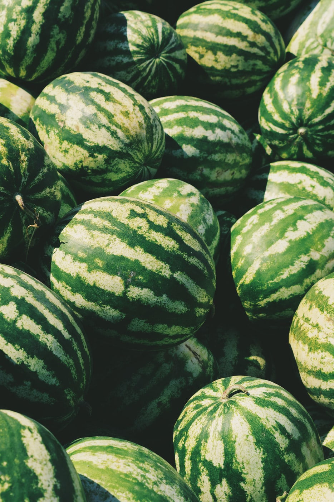

The effects on gut microbiota of type 2 diabetic rats fed a bitter melon formulation (BLSP, a lyophilized superfine powder) were investigated. BLSP treatment significantly reduced fasting blood glucose levels (p < 0.05) and serum insulin levels (p < 0.05) of the diabetic rats. The gut microbiota of treated and control rats were profiled by PCR amplification and pyrosequencing of 16S rRNA genes (V3–V9 region). BLSP significantly reduced the ratio of Firmicutes to Bacteroidetes in diabetic rats, while the relative abundances of Ruminococcaceae, Bacteroides and Ruminococcus were significantly lowered in BLSP-treated rats compared to diabetic rats. Additionally, BLSP significantly suppressed the activation of MAPK (JNK and p38). The results indicate that BLSP can significantly modify the proportions of particular gut microbiota in diabetic rats without disturbing the normal population diversity. By suppressing the activation of MAPK signaling pathway, a BLSP containing diet may ameliorate type 2 diabetes.
